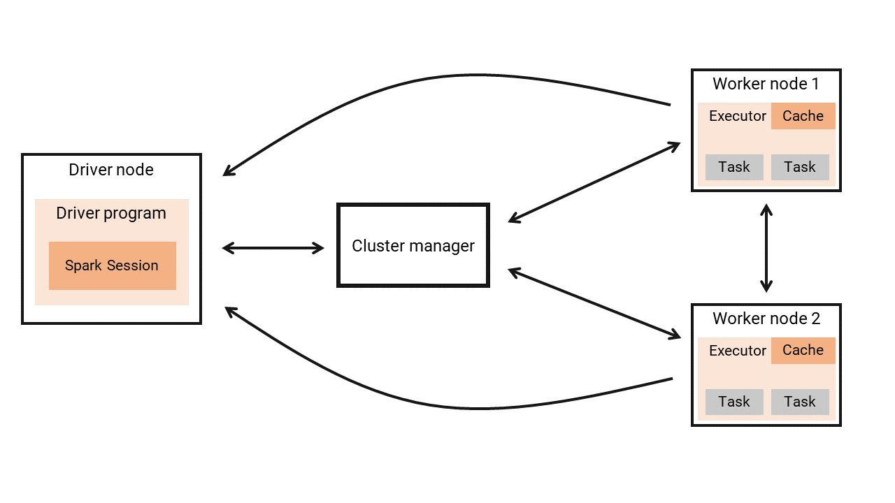

from pyspark.sql import SparkSession
spark = SparkSession.builder.getOrCreate()4 Introducing Apache Spark
In essence, pyspark is an API to Apache Spark (or simply Spark). In other words, with pyspark we can build Spark applications using the python language. So, by learning a little more about Spark, you will understand a lot more about pyspark.
4.1 What is Spark?
Spark is a multi-language engine for large-scale data processing that supports both single-node machines and clusters of machines (Apache Spark Official Documentation 2022). Nowadays, Spark became the de facto standard for structure and manage big data applications.
It has a number of features that its predecessors did not have, like the capacity for in-memory processing and stream processing (Karau et al. 2015). But, the most important feature of all, is that Spark is an unified platform for big data processing (Chambers and Zaharia 2018). This means that Spark comes with multiple built-in libraries and tools that deals with different aspects of the work with big data. It has a built-in SQL engine1 for performing large-scale data processing; a complete library for scalable machine learning (MLib2); a stream processing engine3 for streaming analytics; and much more;
In general, big companies have many different data necessities, and as a result, the engineers and analysts may have to combine and integrate many tools and techniques together, so they can build many different data pipelines to fulfill these necessities. But this approach can create a very serious dependency problem, which imposes a great barrier to support this workflow. This is one of the big reasons why Spark got so successful. It eliminates big part of this problem, by already including almost everything that you might need to use.
Spark is designed to cover a wide range of workloads that previously required separate distributed systems … By supporting these workloads in the same engine, Spark makes it easy and inexpensive to combine different processing types, which is often necessary in production data analysis pipelines. In addition, it reduces the management burden of maintaining separate tools (Karau et al. 2015).
4.2 Spark application
Your personal computer can do a lot of things, but, it cannot efficiently deal with huge amounts of data. For this situation, we need several machines working together, adding up their resources to deal with the volume or complexity of the data. Spark is the framework that coordinates the computations across this set of machines (Chambers and Zaharia 2018).
Because of this, a relevant part of Spark’s structure is deeply connected to distributed computing models. You probably do not have a cluster of machines at home. So, while following the examples in this book, you will be running Spark on a single machine (i.e. single node mode). But lets just forget about this detail for a moment.
In every Spark application, you always have a single machine behaving as the driver node, and multiple machines behaving as the worker nodes. The driver node is responsible for managing the Spark application, i.e. asking for resources, distributing tasks to the workers, collecting and compiling the results, …. The worker nodes are responsible for executing the tasks that are assigned to them, and they need to send the results of these tasks back to the driver node.
Every Spark application is distributed into two different and independent processes: 1) a driver process; 2) and a set of executor processes (Chambers and Zaharia 2018). The driver process, or, the driver program, is where your application starts, and it is executed by the driver node. This driver program is responsible for: 1) maintaining information about your Spark Application; 2) responding to a user’s program or input; 3) and analyzing, distributing, and scheduling work across the executors (Chambers and Zaharia 2018).
Every time a Spark application starts, the driver process has to communicate with the cluster manager, to acquire workers to perform the necessary tasks. In other words, the cluster manager decides if Spark can use some of the resources (i.e. some of the machines) of the cluster. If the cluster manager allow Spark to use the nodes it needs, the driver program will break the application into many small tasks, and will assign these tasks to the worker nodes.
The executor processes, are the processes that take place within each one of the worker nodes. Each executor process is composed of a set of tasks, and the worker node is responsible for performing and executing these tasks that were assigned to him, by the driver program. After executing these tasks, the worker node will send the results back to the driver node (or the driver program). If they need, the worker nodes can communicate with each other, while performing its tasks.
This structure is represented in Figure 4.1:

When you run Spark on a cluster of computers, you write the code of your Spark application (i.e. your pyspark code) on your (single) local computer, and them, submit this code to the driver node. After that, the driver node takes care of the rest, by starting your application, creating your Spark Session, asking for new worker nodes, sending the tasks to be performed, collecting and compiling the results and giving back these results to you.
However, when you run Spark on your (single) local computer, the process is very similar. But, instead of submitting your code to another computer (which is the driver node), you will submit to your own local computer. In other words, when Spark is running on single-node mode, your computer becomes the driver and the worker node at the same time.
4.3 Starting your Spark Session
Every Spark application starts with a Spark Session. Basically, the Spark Session is the entry point to your application. This means that, in every pyspark program that you write, you should always start by defining your Spark Session. We do this, by using the getOrCreate() method from pyspark.sql.SparkSession.builder.
Just store the result of this method in any python object. Is very common to name this object as spark, like in the example below. This way, you can access all the information and methods of Spark from this spark object.